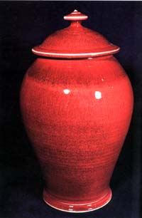

| The Mud-Pie Dilemma
by John Nance. Review by Steven Goldate.
John
Nance’s diary-style book ‘The Mud-Pie Dilemma' is a journalist’s
account of the life and struggles of American studio-potter Tom
Coleman.
Nance picks up the story of Tom Coleman, the potter, in Oregon in 1977, when Tom is 32 years old. He had already been making a living as a potter for eleven years. Tom has just eight weeks to get together enough work for a major show in Seattle – about 100 pieces – a major task.
Nance follows Tom’s preparations for the show from august to October 1977 – his work, his life, hopes, disappointments and achievements.
How
to start making work for a show that’s supposed to be happening
in only eight weeks? It goes something like this: “Quickly making
a tall cylinder, he began shaping it into a bowl. The grey-white
porcelain was wet and soft and sticky smooth in the sweltering heat.
It gleamed as it spun, like a tiny planet." But behind the
beauty and poetry of the craft also lies a stark reality. The Colemans
(Tom and his wife Elaine, an accomplished potter in her own right)
had been grossing around $30,000 a year. After expenses and taxes,
the rest was quickly consumed by living expenses. Unfortunately,
struggling to make ends meet is a common story amongst potters.
Pottery is not necessarily a craft people pursue because they think
it will make them rich, but it's a satisfying way of life and an
opportunity to to get your fingers into the ‘mud-pie’.
Tom
manages to make 160 pieces in the time he allowed himself. From
these he chooses 100 for the show, pricing them a bit below their
possible worth, i.e. ‘to sell’. The exhibition at Northwest Crafts
Center, seems to be only mildly successful – not quite what Tom
was hoping for. Sales were not plenty and the bottom line is that
after deducting all expenses, Tom has earned only a couple of hundred
dollars. This was not very encouraging!
It is at this point that author John Nance has some interesting
conversations with other potter’s in Coleman’s ‘circle’ – his teacher
Bill Creitz, potter friend Pat Horsley and an early teacher, Leta
Kennedy. Nance ‘interviews’ them about their relationship with Tom
and their views on pottery. But the most interesting comment comes
from visiting Scottish potter Brian Johnstone, who says "My
God, mon, yuv gaw ta loosen oop. Yuhrr pawts are just too tight!"
 The
second edition of Nance’s book has been extended to include a substantial
section “Twenty-five Years Later”. Tom has moved to Nevada and has
persisted in making pottery. His persistence has been rewarded and
he has established quite a reputation for himself in the USA and
abroad. The
second edition of Nance’s book has been extended to include a substantial
section “Twenty-five Years Later”. Tom has moved to Nevada and has
persisted in making pottery. His persistence has been rewarded and
he has established quite a reputation for himself in the USA and
abroad.
When Tom moved to Nevada in 1987, not only did his surroundings change, so did his work, which now also incorporates wood-fired pieces with ash glazes or multiple-sprayed glazes, resulting in subtle, harmonious effects. Tom has also branched out, making sculptural work as well as sculptural vessels.
Elaine
Coleman has also matured and gained recognition for her work, which
consists of skilled carvings of stylized plant and animal life under
subtle celadon glazes. Her email address ‘CeladonQueen@hotmail.com’
reflects this achievement.
The Colemans’ story reflects the struggle of many, many potters around the world. However, while there is struggle, there is also another important message embedded in their story – persistence can bring rewards, and it’s not only reaching your goals that’s rewarding, but also the journey itself.
With a Little Help From My Friends
More Book Reviews
More Articles
|